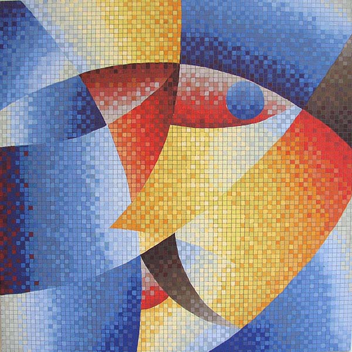
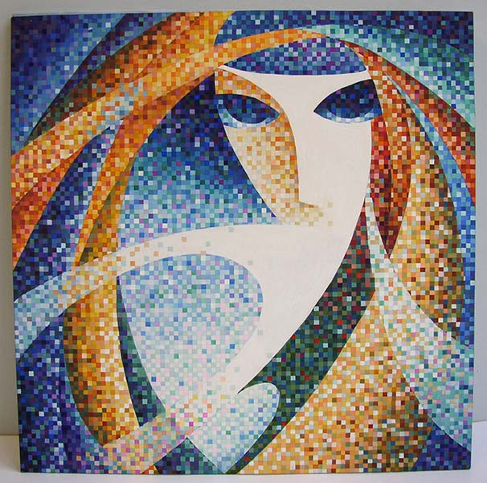
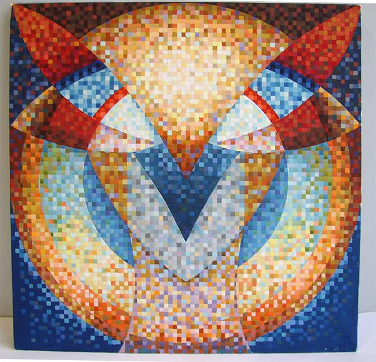
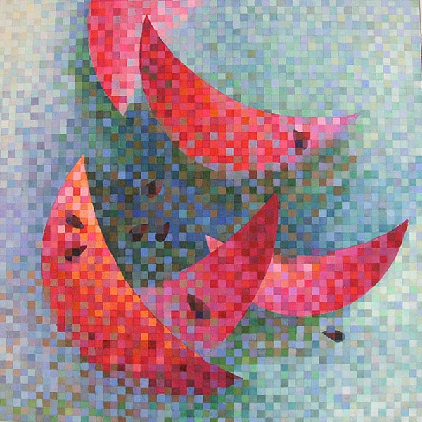
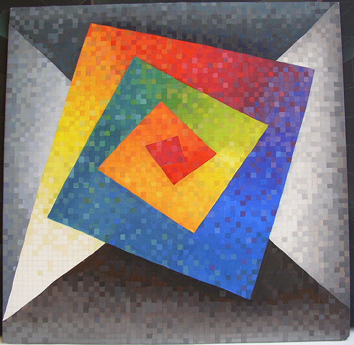
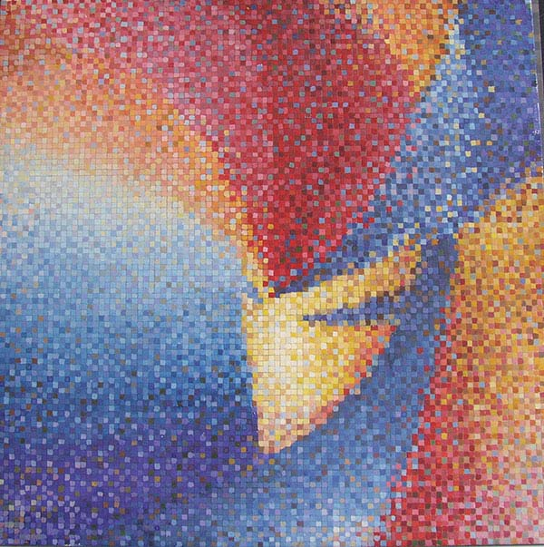
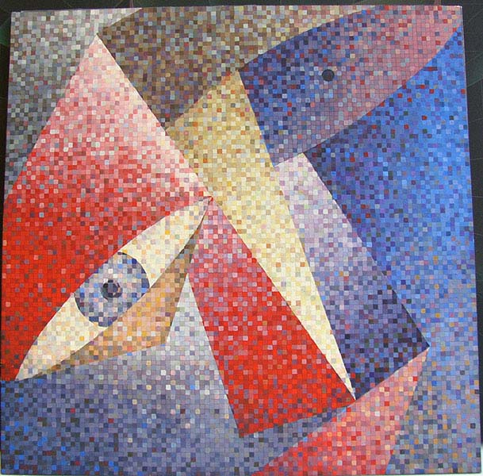
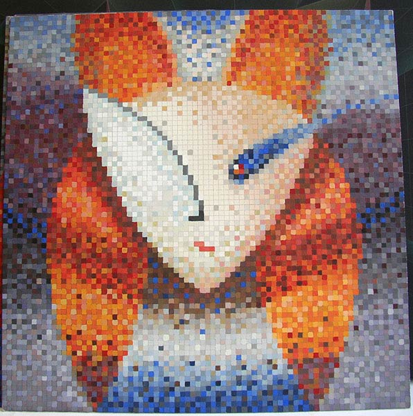
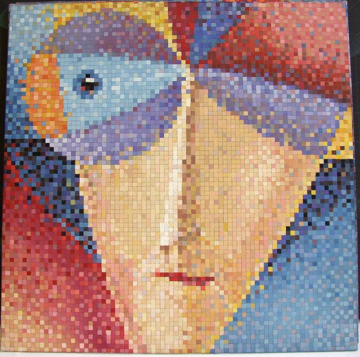
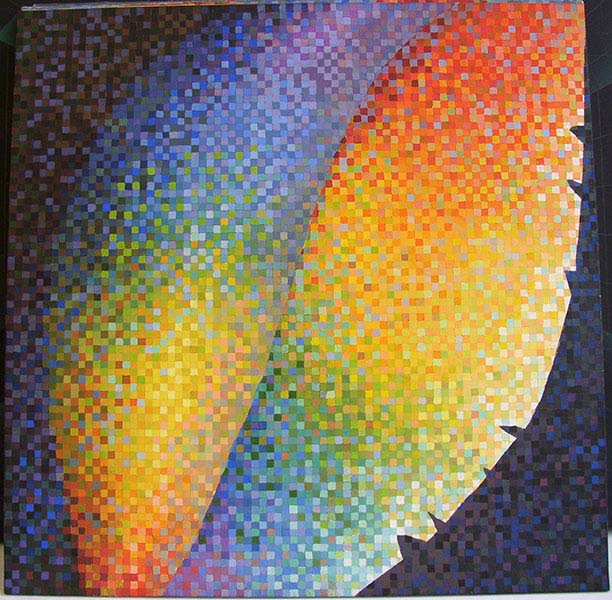

Основы колористики. Альбом работ формата А4.
Типы цветовой композиции и колорита:
- монохромия в теплой и холодной гаммах
- полярная композиция в трех типах колорита
- трёхцветие в насыщенном, приглушенном и разбеленном (или зачерненном) колорите.
- многоцветие в мозаичной технике. Формат 40х40 см
Авторы работ: Колясников А., Баранова Е., Сакович Е., Лазарчик Г., Лозовская О., Шугар Т., Севкович А., Ломако Л., Муравьев Е., Щиглинская А.
Просмотр 31 января 2005

Автопортрет

Автопортрет

Автопортрет

«Арбузы»

Квадратная спираль

Автопортрет

Автопортрет

Автопортрет

Автопортрет

Осенний лист